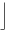
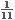
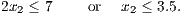
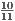
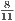
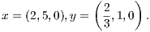

- Find a valid constraint for the matching problem that is violated by this solution.
- Assume the six diagonal edges each have weight two and the remaining 10 edges each have weight one. What is the maximum weight matching? Prove your solution is optimal.
Solution:
- There are (at least) two choices for a set of vertices U ⊆ V leading to a violated odd subset
constraint:
- U = {A,B,C,G,H}: Then ∑ e∈E(U)xe = 2.3 > .
- U = {A,B,C,D,E,F,G,H,J}: Then ∑
e∈E(U)xe = 4.4 >

 .
.
In both cases the violated constraint is

- Since |V | = 9, any feasible solution uses at most 4 edges. Any feasible solution can use at most 2 of the
edges with weight two: one each adjacent to G and to J. So any feasible solution has value at most
2 + 2 + 1 + 1 = 6. One optimal solution is to use the edges
with all other xe equal to zero.

What is the Chvatal rank of the valid inequality 3x1 + x2 ≤ 12?
Solution:
Rank is no larger than 2:
Number the equations as follows:
 | (4) |
|
| (5) |
Combining the two rank one inequalities in the form (4) + (5) gives
|
| (6) |
Rank is at least 2:
The point = (36∕11,40∕11) is feasible, so any valid inequality for the LP relaxation of the form
must have α ≥ 148∕11 > 13.
Alternatively, the feasible region contains
so any rounded inequality must be satisfied by either (4,1) or (3,4). For both of these points, we have 3x1 + x2 = 13.
A third proof:
Any feasible rank-1 C-G cut has the form
|
| (7) |
for some nonnegative u ∈ ℝ3. For this to imply the given inequality 3x1 + x2 ≤ 12, we need to find variables u so that the optimal value of the following LP is strictly smaller than 13:
The dual of this problem is
One feasible solution to this problem is y = (3,3), which has value 13. So there is no primal solution with value strictly less than 13, so the given constraint must have Chvatal rank at least 2.
where x3, x4 and x5 are the slack variables in the three constraints. Find the Gomory and strong Gomory cutting planes implied by the three constraints. Express these constraints in terms of the original variables x1 and x2 and draw them on a graph of the feasible region.
Solution:
Gomory cuts:
- x1 -x3 + x4 = 3:
f3 = , f4 = , f0 = . So the Gomory cut is:

(8) Substituting x3 = 4 + x1 - 2x2 and x4 = 20 - 5x1 - x2 and simplifying gives:
 (9) - x2 + x3 + x4 = 3:
f3 = , f4 = , f0 = . So the Gomory cut is:
(10) Substituting x3 = 4 + x1 - 2x2 and x4 = 20 - 5x1 - x2 and simplifying gives:
(11) - x5 + x3 + x4 = 6:
f3 = , f4 = , f0 = . So the Gomory cut is:
(12) Substituting x3 = 4 + x1 - 2x2 and x4 = 20 - 5x1 - x2 and simplifying gives:
(13)
Strong Gomory cuts:
- x1 -x3 +
 x4 = 3:
x4 = 3:
f3 = , f4 = , f0 = . We have f3 > f0. So the strong Gomory cut is:
(14) Substituting x3 = 4 + x1 - 2x2 and simplifying gives:
(15) which is tight at (4,0) and (3,3.5).
- x2 + x3 + x4 = 3:
f3 =
 , f4 = , f0 = . Since f3 and f4 are both smaller than f0, the strong Gomory cut is the same
as the original Gomory cut.
, f4 = , f0 = . Since f3 and f4 are both smaller than f0, the strong Gomory cut is the same
as the original Gomory cut.
- x5 + x3 + x4 = 6:
f3 = , f4 = , f0 = . Since f3 and f4 are both smaller than f0, the strong Gomory cut is the same as the original Gomory cut.
Graph:

is x1 = x2 = 0, y1 = 2.5, y2 = 1.2.
- Give three mixed integer rounding inequalities that are violated by the solution to the LP relaxation.
- Show that none of your inequalities is implied by the other two.
Solution:
The general form of a mixed integer rounding (MIR) inequality derived from a valid constraint x + y ≥ b with x ≥ 0, y integral, is
- To show one constraint is not implied by the others, we need to find a point that violates the one
constraint and satisfies the others.
- (16) is not implied by (17), (18), and the original linear constraints:
The point x = (0,0), y = (2.5,2) satisfies (17), (18), and the original linear constraints, but violates (16). - (17) is not implied by (16), (18), and the original linear constraints:
The point x = (,), y = (2,1) satisfies (16), (18), and the original linear constraints, but violates (17). (This was found by solving an LP: minimize the left hand side of (17) subject to satisfying the other linear constraints.) - (18) is not implied by (16), (17), and the original linear constraints:
The point x = (0,0), y = (3,1.2) satisfies (16), (17), and the original linear constraints, but violates (18).
- (16) is not implied by (17), (18), and the original linear constraints:
- Constraints:
Point:
 - Constraints:
Point:
Solution:
The general form of the fixed charge inequality is
where C1 is a subset of the variables on the LHS of the original inequality, C2 and L2 are disjoint subsets of the variables on the RHS of the original inequality, b is the constant term on the RHS of the original inequality, aj is the capacity in the xj ≤ ajyj constraints, and λ = ∑ j∈C1aj -∑ j∈C2aj - b.
- Let C1 = {1,2}, C2 = L2 = ∅. We obtain λ = 1 and the valid inequality
which is violated by the given point.
- Let C1 = ∅, C2 = {2}, L2 = {1}. We obtain λ = 2 and the valid inequality
which is violated by the given point.
Alternatively, taking C1 = ∅, C2 = {2}, L2 = {1,3} gives λ = 2 and another valid inequality violated by the current point:
Along with your solutions to this homework, hand in a brief description of what you would like to do for the project part of this course.